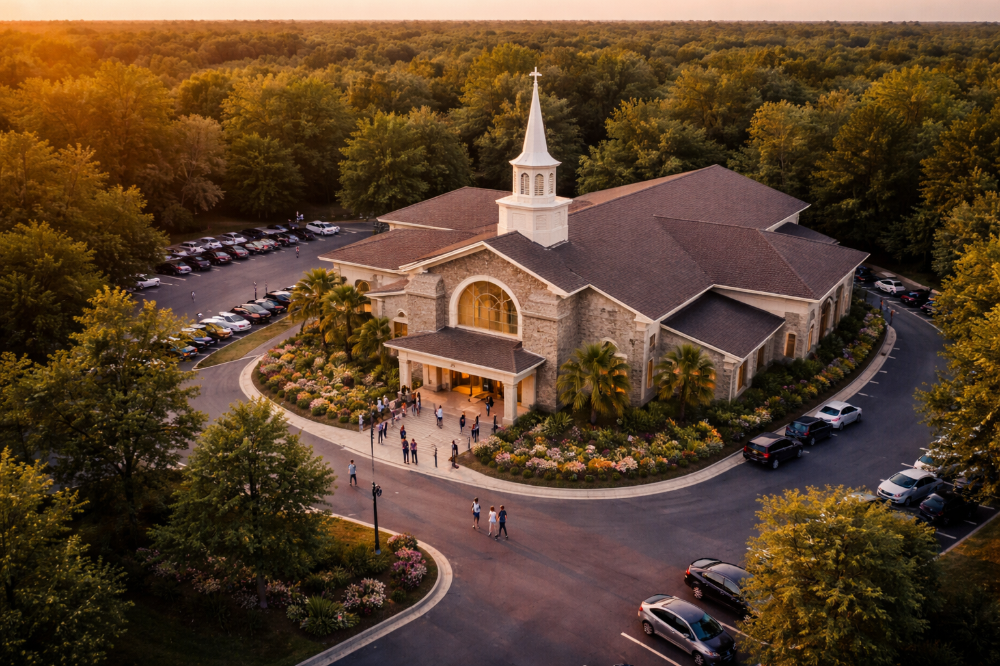
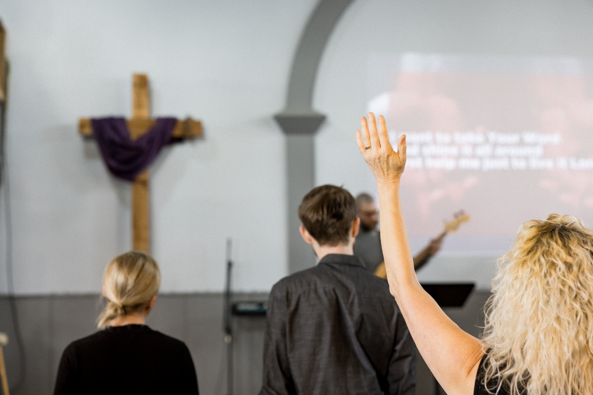

ABOUT
Beliefs, Values, Vision & Team

BIBLICAL AUTHORITY
Our Beliefs & Values
We believe…
By the Holy Spirit, and relying on the blessings of God, we do here and now, by this act, constitute ourselves a Church of Jesus Christ to perform His
service and to be governed by His will, as revealed in the New Testament.
OUR BELIEFS
- We believe in the importance of outreach in our communities.
- Jesus commands us to love our neighbors.
- And the second is like unto it, Thou shalt love thy neighbour as thyself. Matthew 22:39.
Knowing this, we understand we are to love others as much as we love ourselves.
This shows the true love of Christ and will draw others to his family.
OUR VALUES
Our Beliefs & Values
We believe…
In the importance of community outreach.
Jesus commands us to love our neighbors.
And the second is like unto it, Thou shalt love thy neighbour as thyself. Matthew 22:39.
Knowing this, we understand we are to love others as much as we love ourselves. This shows the true love of Christ and will draw others to his family.
We believe…
By the Holy Spirit, and relying on the blessings of God, we do here and now, by this act, constitute ourselves a Church of Jesus Christ to perform His service and to be governed by His will, as revealed in the New Testament.
We believe…
By the Spirit of God, to receive the Lord Jesus Christ as our Savior, and on the profession of our faith, having been baptized in the name of the Father, and of the Son, and of the Holy Spirit, we do now in the presence of God, angels, and this assembly, most solemnly and joyfully enter into a covenant with one another, as one Body in Christ.
We believe…
There is only one living and true God. He is an intelligent, personal, and spiritual Being, The Creator, Redeemer, and Perfection. To Him we owe the Highest Love, Reverence, and Obedience. The Eternal God reveals himself to us as Father, Son, and Holy Spirit, with distinct personal attributes, but without division of nature, essence, or being. (Gen. 1:1; John 1:12)
We believe…
Man was created by the special act of God, in His own image, and is the crowning work of His creation. The sacredness of human personality is evident in that God created man in His own image and in that Christ died for all. (Gen1:26; Rom. 5:19)
We believe…
Salvation is deliverance from the penalty of death and sin. Grace constitutes salvation. Salvation involves the redemption of the whole man and is offered freely to all who accept Jesus Christ as Lord and Saviour. (Ephesians 2:8)
We believe…
Sanctification is the experience, beginning in regeneration, by which the believer is set apart to God’s purpose, and is enabled to progress toward moral and spiritual perfection through the presence and power of the Holy Spirit dwelling in Him. (Proverb 4:18)
Encountering God with Reverence, Expectation, and Joy
At God’s Anointed Evangelistic Ministry, Inc., we are devoted to cultivating an atmosphere of passionate, Spirit-led worship. Founded in October 2005 by Pastor LaWanda Y. Peoples-Lambert, our nondenominational, multicultural ministry exists to glorify God through heartfelt praise, prayer, and teachings of His Word.We gather regularly with great expectation that the Holy Spirit will abide with us, transform us, and draw us closer to Jesus Christ. Our Worship is not a ritual; it is a spiritual encounter with the true Living God. Scriptural Foundation: “Let us go into His dwelling place: let us worship at His footstool.” NKJV Psalm 132:7 Our desire is that every person who enters our fellowship experiences the presence of God and grows stronger through the saving power of Jesus Christ.
Loving One Another as Christ Loves Us
We believe the Church is more than a building; it is a family. God’s Anointed Evangelistic Ministry is committed to fostering a genuine, loving, and Christ-centered community where all are welcome.
Jesus commands us to love our neighbors as ourselves. Through compassion, encouragement, and unity, we demonstrate the true love of Christ to one another and to the world.
Scriptural Foundation:
“And the second is like unto it, Thou shalt love thy neighbour as thyself.” KJV Matthew 22:39
As a multicultural congregation, we celebrate diversity while remaining united in faith. Our goal is for all to come into the knowledge of Jesus Christ and develop a personal relationship with Him.
“For the Son of man is come to seek and to save that which was lost.” — Luke 19:10
We are dedicated to creating a place where faith is strengthened, lives are restored, and believers grow together in grace.
Seeking Christ and Growing in Truth
We are committed to sound biblical teaching and intentional spiritual growth. Discipleship is not accidental; it is purposeful. We seek Christ daily for truth, wisdom, and transformation.
Through the study of God’s Word, prayer, and fellowship, we equip believers to mature in their faith and walk confidently in their calling.
Scriptural Foundation:
“And ye shall know the truth, and the truth shall make you free.” — John 8:32
Our mission is to connect people to faith and lead them into a deeper understanding of God’s Word, empowering them to live victorious Christian lives.
Serving Wherever He Sends Us
We understand the importance of outreach and evangelism. As a nonprofit ministry operating in Maryland, we are committed to serving our communities wherever help is needed.
We believe faith must extend beyond the walls of the church. We sow into God’s Kingdom through generosity, service, and evangelism, trusting that what is planted in obedience will produce a harvest for His glory.
Scriptural Foundations:
“But this I say, He which soweth sparingly shall reap also sparingly; and he which soweth bountifully shall reap also bountifully.” — 2 Corinthians 9:6
“And he said unto them, Go ye into all the world, and preach the gospel to every creature.” — Mark 16:15
Our mandate is clear:
Share in worship. Seek Christ for truth. Sow to build God’s Kingdom. Serve wherever He sends us.

VISION
Our vision and mission are to help connect a multicultural community to our faith-based church while serving our surrounding communities. We Are A Kingdom Expansion Ministry, and We Are Expanding One At A Time.
Our Pastor desires that ALL come into the knowledge of Jesus Christ and have a personal relationship with Him. As a congregation, we gather regularly for praise, worship, and the Word of God, with the expectation that the Holy Spirit will abide with us. We pray and hope for the weak to become stronger through the salvation of Jesus Christ!
Luke 19:10 For the Son of man is come to seek and to save that which was lost.
Christian development at God’s Anointed Evangelistic Ministry focuses on nurturing believers through passionate worship, sound biblical teaching, and intentional discipleship so they may grow in their knowledge of Jesus Christ and walk in His truth. As individuals mature in their faith, they are equipped to live missionally—serving others, loving their neighbors, and building God’s Kingdom wherever He sends them.
We want to see others encounter Jesus Christ through passionate worship, intentional praise, allowing the truth of God’s Word and the power of the Holy Spirit to renew their lives and lead them into a life of service, love, and kingdom purpose.
We believe…
Salvation is deliverance from penalty of death and sin. Grace constitutes salvation. Salvation involves the redemption of the whole man and is offered freely to all who accept Jesus Christ as Lord and Saviour. (Ephesians 2:8)
We believe…
Sanctification is the experience, beginning in regeneration, by which the believer is set apart to God’s purpose, an is enabled to progress toward moral and spiritual perfection through the presence and power of the Holy Spirit dwelling in Him. (Proverb 4:18)
OUR TEAM

Jeremy Darrow
Lead Pastor

Lauren Hiebert
Worship Director

Sandra Jager
Kids Ministry Director
LEADERSHIP BOARD

Helene Crawford

Justin Hiebert

Patty Lindsey